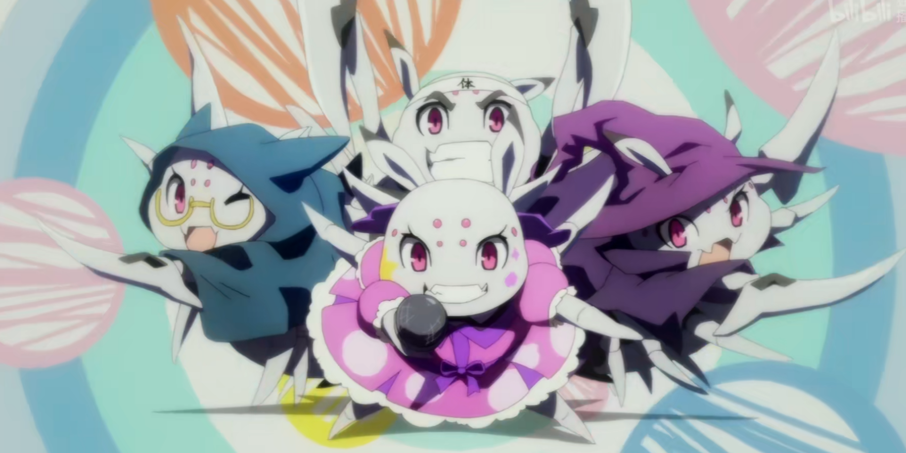
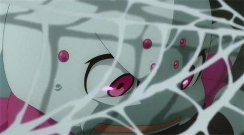

转生成蜘蛛又怎样！


简介
《转生成蜘蛛又怎样！》（日语：蜘蛛ですが、なにか？）是马场翁撰写的日本轻小说作品，连载在成为小说家吧并在2015年获得排名第一名。插图由辉龙司所绘，漫画版由かかし朝浩执笔。2018年7月宣布动画化[2]，原定于2020年内播出，受到新冠病毒影响延至2021年1月起播出。
故事
某处高中教室突然发生爆炸，在场教师和学生们都死于那场爆炸中。主角为其中一名女学生转生到了异世界，于大迷宫中变成了蜘蛛魔物，却不知是精神强韧还是其他原因坦然接受。结果变成蜘蛛魔物的主角在残酷迷宫中不断求生，最后突破自我通神。 而在另一方面，其中一名男学生转生为人族王国的王子，在成为勇者后就要面对人族与魔族的全面战争。
登场角色
主线
- 我／白／白织（私／白（しろ）／白織（しらおり），声：悠木
- 本作主角(邪神D的宠物)，于迷宫中诞生的蜘蛛魔物，在原来世界为日本女高中生“若叶姬色”，但故事后期才发现并非这么回事。故事一开始进入困难模式的生存竞争，以最弱的魔物姿态出生高等魔物围绕的迷宫最底层。拥有D给转生者的特别优惠技能“韦驮天”，加上蜘蛛的特性，在逃亡上有着很大的优势。非常不善言词，除了魔王和D以外，跟其他人都无法正常说话。多次被妖精波狄玛斯算计，相当讨厌妖精。在神化后暂时无法使用力量，靠着魔王的保护度过两年，因为这份恩情决定帮助魔王拯救（世界/莎丽儿女神）。酒品很差，一喝酒就会变得话多爱笑。武器为用自己身体制作的镰刀，后来被D动了手脚，变得会自动成长
- 苏菲亚·盖伦（ソフィア・ケレン，声：竹达彩奈）
-
吸血鬼真祖，双亲为人族，吸血鬼真祖的身份是D给转生们的优惠之一。双亲被妖精族长波狄玛斯杀死，因此痛恨妖精。在婴儿时期就被白开始名为英才教育的强迫训练（用蜘蛛丝逼迫还是婴儿的苏菲亚走路，也曾叫她用魔法打自己）有着死人般的雪白肌肤，血色的双瞳。对相依为命的仆人梅拉抱有类似病娇的感情，并觉醒了“妒心”的技能。因为在学校乱搞被白下了叫主人的诅咒，所以开始称呼白为主人。前世为日本女高中生“根岸彰子”，私下被称为“真贞子”。得到技能“嫉妒”后病娇属性增强。疑似是战斗狂，爱用的武器是一把大剑，常常被白看到她笑眯眯的保养著武器。
- 梅拉佐菲（メラゾフィス，声：津田健次郎）
- 被白在心里称作梅拉。被吸血鬼真祖苏菲亚吸血而从人族变成吸血鬼。能从苏菲亚的影子当中出现，神情认真、脸色苍白得像是快要死掉一样的男子。为苏菲亚爸爸的下属兼好友，且对苏菲亚的妈妈抱有爱意，因为两位好友被妖精族长波狄玛斯杀死，因此相当痛恨妖精。魔族军的干部，与田川似乎有段因缘。
- 拉斯（ラース，声：逢坂良太）
- 鬼人族，原为哥布林，有着与前世相同的样貌。在魔族进攻妖精之里时出现在俊等人面前。魔族军第八军团长。
爱莉儿（アリエル，声：上坂堇）
- 现任魔王，“原初蜘蛛”，所有蜘蛛怪的起源，在与白第一次相遇时曾用过“我是你祖母喔！”来搭话。和所有蜘蛛怪拥有眷属关系，较为强大的有女王蜘蛛、人偶蜘蛛。为上古神兽，被女神教的信徒索崇拜。痛恨妖精，特别是族长波狄玛斯，积极进行着消灭人类和魔族的作战。灵魂和白的平行意识（前身体部长）融合，并拥有白的记忆，也因此造成说话方式和个性上的改变。本和白处于敌对状态，但因为无法杀死白所以提出休战，最后渐渐和白成为朋友。因为全身白所以叫主角小白，因此其他人也跟著称呼他为白。白对其评价为超级大好人，是少数几个白能正常对话的人。
- 邱列迪斯提耶斯（ギュリエディストディエス，声：浪川大辅）
- 因为名字太长，被白在心里称做邱列邱列。全身包覆着纯黑的甲胄，露出的样貌是黑发以及浅黑色的肌肤，除了红色的眼瞳之外只能用“黑”来形容的男人。打倒火龙连多后出现在主角面前。化名为“黑”加入魔王军，第九军团长。为初阶神之一，无法反抗位阶最高的D，被D警告不准对转生者出手。
- D（D，声：早见沙织）
- 自称邪神，为最高阶的神之一，为了体验青春高中女子生活而翘掉工作，使用若叶姬色的假名混入高中，甚至拥有户籍。个性任性完全的利己主义，为了欲望不择手段，只要觉得有趣什么事情都做的出来。让因为她而意外被杀死的学生和老师转生，赋予技能“n%l=w”让他们也能够使用系统辅助，并且给予每个转生者特别优惠技能，并将自己若叶姬色的记忆植入宠物蜘蛛内，让它补足转生者人数，避免被部下察觉她翘班。原本只是草率地用障眼法敷衍，连灵魂未补足到人类的程度，以低等生物的水平转生成和这个世界相同的蜘蛛身上，地点选在最危险的迷宫深处，但蜘蛛子的求生意志让她产生了兴趣。完成系统后便开始作壁上观不做干涉，但只要觉得可能会变得有趣，就会毫不犹豫出手干涉。让转生者们的老师成为妖精，并且给予技能“学生名册”因为觉得有趣所以在上面写了一些假资讯，让白生气到为此特地转移过来抱怨。为神化的白正式命名为白织，因此和白的关系增强。似乎觉得白非常有趣，多次干涉系统给予各种帮助，也会透过智能手机和她搭话，在第九卷两人相遇时，曾说出“想要把你留在身边”“你是属于我的东西”等话。为白的原型，不只样貌相同，连个性也意外相像。
S篇
- 修雷因·萨刚·亚纳雷德（シュレイン・ザガン・アナレイト，声：堀江瞬）
- 通称“俊”，前世为日本高中生“山田俊辅”。转生为亚纳雷德王国第四王子，在身为勇者的兄长身亡后接替成为新一任勇者。在公开继任勇者人选前夕被由古策划的阴谋所害，不得不逃亡国外。通过艾尔罗大迷宫前往妖精之里，妖精之里遭到由古进攻后遭遇苏菲亚等人。
- 卡娜迪雅·赛莉·亚纳巴鲁多（カルナティア・セリ・アナバルド，声：东央）
- 通称“卡迪雅”，前世为日本高中生“大岛叶多”，山田俊辅的好友。转生为亚纳巴鲁多公爵千金，一直支持着俊。红发的美少女，唯一一个性别转换的转生者。在前世就是俊的好友，而转生后的立场能让两人经常一起行动。在王国政变事件中遭到洗脑，被俊所救之后对俊产生异性间的好感。
- 菲伦（フェイルーン，声：喜多村英梨）
- 通称“菲”，前世为日本女高中生“漆原美丽”。转生为地竜，在俊成为勇者时特殊进化为光龙。转生成魔物的转生者之一，“人化”后有着前世的外貌。前世曾霸凌主角，当从菲莉梅斯听说主角死亡的消息时心中产生懊悔的情绪。当主角出现在妖精之里时十分动摇。
- 菲莉梅丝·帕菲纳斯（フィリメス・ハァイフェナス，声：奥野香耶）
- 昵称是“冈姊”。转生成妖精的少女。前世是班上的导师，原本为一历女，并为了逆光源氏计划而成为了糟糕的老师，但转生后为了保护学生们四处奔走。 深信妖精是保护世界的正道而听从了波狄玛斯。一直以为不在技能“学生名册”上的主角──若叶姬色已经死亡，当主角出现在妖精之里时非常震惊。
- 由古·邦恩·连克山杜（ユーゴー・バン・レングザンド，声：石川界人）
- 前世为日本高中生“夏目健吾”，转生成连克山杜帝国的皇太子。性格嚣张跋扈。企图暗杀俊却被菲莉梅丝逮到，怀恨在心后与同伙颠覆亚纳雷德王国，杀害国王嫁祸给俊等人。与俊再度对战后落败，用“真贞子”的绰号惹怒苏菲亚，在即将被杀之际被主角拦下。
- 悠莉恩·乌伦（ユーリーン・ウレン，声：田中爱美）
- 昵称为悠莉，前世为日本女高中生“长谷部结花”，转生到异世界之后成了弃婴。后成了神言教的狂信者。在王国政变事件中遭到由古洗脑，在妖精之里被老师打伤后昏迷。
世界观的设定
- 艾尔罗大迷宫（エルロー大迷宮）
- 连接达斯特鲁提亚大陆和卡萨纳喀拉大陆的世界最大地下迷宫。
- 达斯特鲁提亚大陆（ダズトルディア大陸）
- 存在着许多人族国家。
- 卡萨纳喀拉大陆（カサナガラ大陸）
- 世界最大的大陆。
电视动画
主题曲
- 片头曲
- keep weaving your spider way”（第1话－第12话）
- 作词：タナカ零，作曲：山崎真吾，编曲：タナカ零
- 主唱：安月名莉子
- 片尾曲
- “がんばれ！蜘蛛子さんのテーマ”（第1话－第6话、第8话、第 10话、第12话）
- 作词：乌屋茶房，作、编曲：橘亮祐、篠崎あやと
- 主唱：“我”（悠木碧）
- “現実凸撃ヒエラルキー”（第13话、第15话、第17话－）
- 作词：hotaru，作、编曲：神田ジョン
- 主唱：“我”（悠木碧）
蓝光DVD
| 卷属 |
发售日期 |
收录话术 |
蓝光版 |
DVD版 |
| 1 |
2021年4月28日 |
1-6话 |
2KAXA-8061 |
KABA-10961 |
|---|
| 2 |
预定2021年6月30日发售 |
7-12话 |
2KAXA-8061 |
KABA-10961 |
|---|